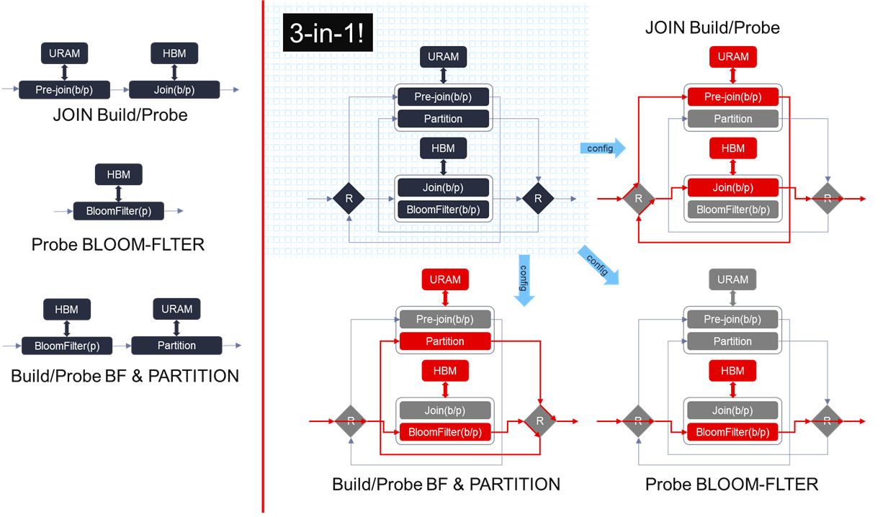
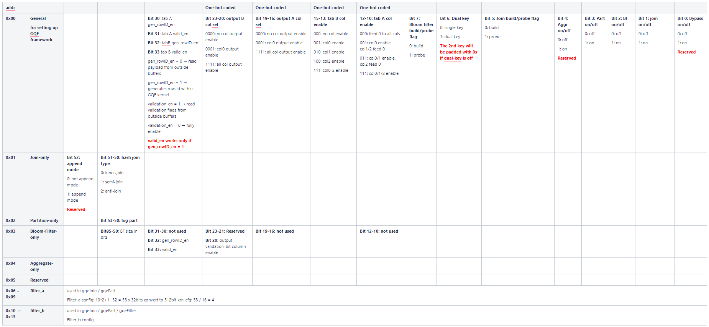

GQE Kernel Design¶
3-in-1 Kernel¶
The 3-in-1 GQE kernel is a compound of multiple previous released GQE kernels, containing a large number of post-bitstream programmable primitives. It can execute not only hash-join/hash-bloomfilter/hash-partition individually but also hash-based bloom filter build + partition or bloom filter probe + partition as a combination to minimize the intermdediate data transfer. To instantiate the 3-in-1 in the resource-limited U50 Alveo for obtaining the best benefit-cost ratio, we refactored every processing unit (PU) as well as the output data paths and retired the bypass design in the current kernel, now it enpowers the Q5-simplified query can be done with a 4x performance improvement without any cost increasing on device comparing to the previous separated GQE kernels.

The internal structure of 3-in-1 GQE is illustrated in the figure above. Besides those challenging parts we have accomplished in previous separated GQE kernels, it is important to emphasize the necessity of the hardware structure we implemented in 3-in-1 GQE for reusing the 2 AXI-Master ports and 3 internal huge URAM buffers in each PU, as we cannot tolerate even a little of resource wastes on the device to make the gqeJoin/gqeBloomfilter/gqePart all on a single U50 comes ture.
{kind=link}
The reason why we need this reusable hardware structure is because of the limitation on the resources of U50, and the different precedence of URAM and HBM in different flows. It can be described in the figure above on the left side of the vertical red line.
JOIN build/probe flow: needs to save the total number of an unique key in the URAM first, and then save the key/payload pairs in the HBM.
Bloom filter build/probe flow: needs HBM to access its corresponding hash-table.
PART: needs URAM to buffer the post-partitioned key/payload pairs to get a reasonable throughput when flushing the partitioned bucket out.
While performing the bloom filter probe operation + PART flow, we don’t know when the key/payload pairs in a specific bucket is enough to be flushed out. To avoid implementing a duplicated URAM buffer after the partition module, we have to arrange the bloom filter operation before the partition so that we can fully utilize the original URAM in partition module to collect the partitioned rows. Thus we need this reusable hardware structure as illustrated on the right of the vertical red line in the figure above, where the data goes along with the different paths (marked with red) under different configurations.
The hardware resource utilization of 3-in-1 kernel is shown in the table below (post-placement). Total part contains not only the listed sub-modules resource utilization but the interconnect streams to serve for the dataflow design in 3-in-1 GQE kernel.
| Module | LUT | LUT as memory | Register | BRAM36 | URAM | DSP |
| AXI adapters | 34306 | 9256 | 75782 | 159 | 0 | 0 |
| Scan | 9581 | 900 | 9581 | 1 | 0 | 0 |
| Filter | 20480 | 3936 | 11850 | 0 | 0 | 0 |
| crossbar 4-to-8 | 9044 | 15110 | 4696 | 0 | 0 | 0 |
| PU x 8 | 285419 | 47728 | 257620 | 300 | 264 | 72 |
| adapt sizer x 8 | 9597 | 0 | 8476 | 0 | 0 | 0 |
| collect 8-to-1 | 7147 | 0 | 8543 | 0 | 0 | 0 |
| Write | 19205 | 1612 | 22488 | 1 | 0 | 3 |
| Total | 424564 | 81037 | 434954 | 569 | 264 | 75 |
Caution
In the current release, all columns are expected to have the same number of rows with the same type.
Meta Information¶
The input / output data columns save all raw column data. The statistic information, e.g., row number, column number, is recorded in meta information. The internal structure of meta information is shown in the figure below. It is important to make it clear that the Meta Information is used for both the input port and the output port, the same meta struct should be feed to the input as well as the output meta ports of the 3-in-1 GQE. Moreover, we use only number of input rows and section ID information before loading the actual table rows for every flows supported in 3-in-1 GQE.

Note
- Join/Aggr/Bloomfilter only uses the first 8 rows of meta for number of input rows & section ID.
- Part flow supports a maximum of 256 partitions, each number of rows in a partition is described by a 32-bit integer, starting from output meta[8], 256 / 16 = 16 lines are used for partitioning nrow output.
- Size of each partition is configured through meta row 0, from 104 to 135 bits. User can achieve this by simply calling
setPartitionAPI in classMetaTableof L2. - When the number of partition is less than 256, the first N parts of meta row 8-23 are used, starting from meta[8][31-0] with little endian.
Unified Kernel Command¶
The configuration buffer basically programs the kernel at runtime. It toggles execution step primitives on or off, and defines the filter condition. The details are documented in the following figure:
{kind=link}
14 lines of 512-bit configuration data are used in unified kernel command. From address 0x00 to 0x03, the 512-bit configurations are used to setting the general configuration, join configuration, partition configuration, and bloom filter configuration respectively. 0x04 is reserved for Aggregate flow. As all of the different flows shares the same dynamic filtering module, same configuration lines from 0x06 to 0x13 are used.
For the current implementation of 3-in-1 GQE, the supported flows can be configured through:
| Flow | Bloom filter build/probe flag | Dual key | Join build/probe flag | Aggr on/off | Part on/off | BF on/off | Join on/off | Bypass on/off |
| Join build | 0 | 0/1 | 0 | 0 | 0 | 0 | 1 | 0 |
| Join probe | 0 | 0/1 | 1 | 0 | 0 | 0 | 1 | 0 |
| Bloom filter probe | 1 | 0/1 | 1 | 0 | 0 | 1 | 0 | 0 |
| Bloom filter build / Part | 0 | 0/1 | 1 | 0 | 1 | 1 | 0 | 0 |
| Bloom filter probe / Part | 1 | 0/1 | 1 | 0 | 1 | 1 | 0 | 0 |
The Dual key option instructs the kernel to use only the first (by setting to 0) or both of the key columns (by setting to 1) in the flow.
There is no need for users to configure the 3-in-1 GQE by declaring and setting the complicated configuration bits themslves, software APIs that can be used to configure the 3-in-1 GQE are provided in Unified Kernel Command. They are extremly friendly to the software developers.
Caution
Directly bypass is not supported in the current 3-in-1 as resources are very limited on U50.
Up to 3 columns are supported for both input table A and B, which may consist of 1-2 key columns and 1 payload column. The column enable flags are set in bit 10-15. There are 4 output columns designed in 3-in-1 GQE as JOIN needs emit both the 1-2 key and the payload from table A and table B, the corresponding output column enable flags are 16-23 bits.
Payload column data, which is normally used as rowID column, can be assigned from user input buffer or auto-generated within the kernel. The rowID generation configuration is controlled by bit 30-33. If generating rowID inside the kernel is set to 1, the validation enable flag also need be configured as a combination to determine whether to use the validation-bit column or not.
The columns are indexed starting from 0. -1 is used as a special value to instruct the table scanner to feed zeros for that column.
The dynamic filtering configuration is aligned to lower bits. Build/probe table’s filter configurations are located in address 0x06-0x09 / 0x10-0x13 respectively.
Join Flow¶
Internal multi-join supports three reconfigurable modes, namely inner-join, anti-join, and semi-join. To join efficiently at different data scale, the join process is divided into two phases: build and probe. Build phase takes Table A as input to build the hash table, while Probe phase takes Table B as input and probes the conflicting rows from built hash table. By calling Table B multiple iterations, Table B that with arbitrary size can be joined. On the other hand, By spliting Table A into multiple slice and running mutli-(build + Nx probe), Table A with any size can be employed as the left table.
This kernel works with three types of input buffers, 1x kernel configuration buffer, 1x meta info buffer, 1x validation-bit buffer, and 3x column data buffers. The result buffers are 1x result data meta and 4x output column data.
The hash join type option indicates the work mode of multi-join, 0 for inner-join, 1 for semi-join, and 2 for anti-join.
Caution
The 3-columns input data are scanned in via 3x 256-bit AXI ports. However, only 1x 256-bit AXI port is employed to JOIN output (up to 4 cols data. When the resulting data are huge, the write out module performance would be the bottleneck of the kernel.
Bloom-Filter Flow¶
The bloom-filter is a space-efficient probabilistic data structure that is used to test whether an element is a member of a set. False positive matches are possible, but false negatives are not - in other words, a query returns either “possibly in set” or “definitely not in set”. (from Wikipedia)
The 3-in-1 GQE kernel supports Bloom-Filter probe flow, that the implementation fully utilizes the high bandwidth feature of HBM to accelerate the query (both build and probe) ability and expands the capacity as large as possible at the same time.
Since Bloom-Filter shares the same framework as 3-in-1 GQE. Thus, the input key and payload should be 64-bit width, and 1 or 2 key column(s), 1 playoad column plus 1 validation-bit column is allowed to be applied to the kernel.
The input/output columns for using the bloom-filter flow can be explained as:
| Input | Column 0 | key 0 |
| Column 1 | key 1 (if dual-key is enabled) | |
| Column 2 | payload | |
| Validation Column | input validation bits | |
| Output | Column 0 | validation bits |
| Column 1 | unused | |
| Column 2 | unused | |
| Column 3 | unused |
Meanwhile, a proper size in bits of the bloom filter should be set through calling setBloomfilterSize API in class KernelCommand to get a reasonable false positive probability under a specific set of unique keys.
64-bit Partition Flow with Bloom Filter Build/Probe¶
The GQE partition kernel can partition the input table into corresponding clusters according to hash value of selectedkey columns. This kernel is designed to scale the problem size that can be handled by the GQE Join or Aggregate kernel. To reduce the size of intermediate data transfer, it is equipped with not only the built-in dynamic filter but also the HBM-based bloom filter.
It scans kernel configuration buffer, meta information buffer and 3x columns input raw data in and passes to the built-in dynamic filter. The filter condition is configured in kernel configuration buffer, from address 0x06 to 0x13. After filtering, each row data will be dispatched into one of the 8 PUs to calculate hash value of the primary key. Based on the hash value and the bloom filter build/probe flag set in the general configuration, the key and payload data will be firstly walked through the HBM-based bloom filter, and then saved to the corresponding bucket / partition. Once one bucket is full, the full bucket will trigger one time burst write which flushs data from internal URAM bucket to outside off-chip resulting buffers.
The logarithm of number of partition can be configured through calling setLogPart API in class KernelCommand. A maximum of 256 buckets are created in internal URAM array, each bucket buffers one time burst write and flushs the results to off-chip buffers when full. The output of partition kernel is 3x columns output data and 1x output meta information buffer.
Attention
The row number of each output partition is given in the output meta, from row 8 to 23. Due to the supported maximum partition number is 256, each row number takes 32 bit in meta buffer, 256/(512/32) = 16 lines are employed to save these row number information.
Besides, The partition size for each bucket should be provided in meta information by calling setPartition API in class MetaTable.
Aggregate Kernel¶
The Aggregate kernel is another key kernel of General Query Engine (GQE) which supports both grouping and non-grouping aggregate operations.

The internal structure of this kernel is shown in the figure above. Same to join kernel, 8-cols data buffer, 1x kernel config buffer and 1x meta info buffer are employed as the kernel input. Due to the diversity of output data types, e.g., aggregate max, min, raw data, etc., 16x output column buffers are used as the output buffer. As shown in above figure, before entering into hash group aggregate module, each element in each row will be evaluated and filtered. Thus, some new elements can be generated and some rows will be discarded. Moreover, two cascaded evaluation modules are added to support more complex expression.
The core module of aggregate kernel is hash group aggregate, which is a multi-PU implementation and given in the following diagram. Each PU requires 2 HBM banks and some URAM memory blocks to buffer distinct keys as well as payloads after aggregate operations. And one internal loop is implemented to consume all input rows with each iteration. Furthermore, all PUs are working in parallel to achieve higher performance.

The data structure of input and output meta and raw data are same as join kernel. The configuration buffer is composed of 128 x 32-bit slots. The details of configuration buffers are listed in the table:
| Module | Module Config Width | Position |
| Scan | 64 bit | config[0]~config[1] |
| Eval0 | 289 bit | config[2]~config[11] |
| Eval1 | 289 bit | config[12]~config[21] |
| Filter | 45*32 bit | config[22]~config[66] |
| Shuffle0 | 64 bit | config[67]~config[68] |
| Shuffle1 | 64 bit | config[69]~config[70] |
| Shuffle2 | 64 bit | config[71]~config[72] |
| Shuffle3 | 64 bit | config[73]~config[74] |
| Group Aggr | 4*32 bit | config[75]~config[78] |
| Column Merge | 64 bit | config[79]~config[80] |
| Aggregate | 1 bit | config[81] |
| Write | 16 bit | config[82] |
| Reserved | config[83]~config[127] |
The hardware resource utilization of hash group aggregate is shown in the table below (work as 180MHz).
| Primitive | Quantity | LUT | LUT as memory | LUT as logic | Register | BRAM36 | URAM | DSP |
| Scan | 1 | 12209 | 4758 | 7451 | 18974 | 0 | 0 | 2 |
| Eval | 8 | 2153 | 426 | 1727 | 2042 | 4 | 0 | 21 |
| Filter | 4 | 2168 | 13 | 2155 | 1764 | 0.5 | 0 | 0 |
| Group Aggr | 1 | 162202 | 27819 | 134383 | 210926 | 62 | 256 | 0 |
| Direct Aggr | 1 | 4349 | 0 | 4349 | 6611 | 0 | 0 | 0 |
| Write | 1 | 30938 | 9490 | 21448 | 43579 | 0 | 0 | 0 |
| AXI DDR | 1 | 4586 | 1313 | 3273 | 78855 | 18 | 0 | 0 |
| AXI HBM | 1 | 20528 | 4456 | 16072 | 45416 | 124 | 0 | 0 |
| Total | 298470 | 60402 | 238068 | 399737 | 255 | 256 | 2 |